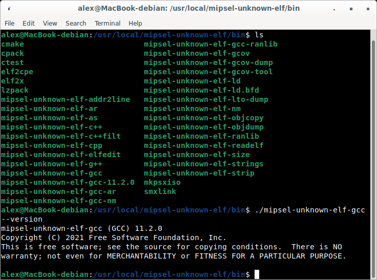

PSN00bSDK Installer
By Alex Free
A quick, automatic, and easy unofficial installer for LameGuy64's PSN00bSDK designed for 64 bit Windows, Fedora, Ubuntu, and Debian systems.
Features:
- Installs any and all required build dependencies automatically using APT, DNF, or PACMAN (MSYS2).
- Builds GCC 11.2.0 and Binutils 2.37 for mipsel-unknown-elf.
- Sets up the PSnoobSDK with C++ support.
- Tests everything by building the PSnoobSDK examples.
- Compiles and installs CMake v3.22.1 (a very recent CMake version is required for the PSN00bSDK but is not available in package managers as of 1/6/2022).

PSN00bSDK Installer GitHub || PSN00bSDK Installer Homepage || PSN00bSDK Official GitHub
Table Of Contents
Downloads
PSN00bSDK Installer v1.2 For Windows and Linux
You can also use git:
git clone https://github.com/alex-free/PSN00bSDK_installer
Usage
Download the latest PSN00bSDK_Installer, and run the ipsxsdk script with sudo or root.
Important: You need to put the SDK/toolchain/CMake in your $PATH to use it after running the ipsxsdk script: export PATH=/usr/local/mipsel-unknown-elf/bin:$PATH
Changelog
Version 1.2
- Updated Debian/Ubuntu dependency list.
- Added CMake to the compile.
- Updated GCC 7.4.0 to 11.2.0.
- Updated Binutils 2.31.1 to 2.37.
- Updated the
ipsxsdk script to work with the new CMake based PSN00bSDK.
- Rewrote documentation in HTML
- Changed from downloading any needed source to containing it locally in the installer itself.
- Installs the PSN00bSDK directly into
/usr/local/mipsel-unknown-elf, the same prefix that the toolchain is in.
Bundled Software And Licensing
- GCC v11.2.0 is licensed under the GNU GPL version 3 or later, with the gcc runtime excpetion for compiled software.
- Binutils v2.37 is licensed under the GNU GPL version 3 or later.
- CMake v3.22.1 is licensed under the 3-BSD license.
- PSN00bSDK is the latest version as of 12/6/2022, and is licensed under the Mozilla Public License 2.0.
The PSN00bSDK installer itself is released into the public domain, see the file unlicense.txt in each release.